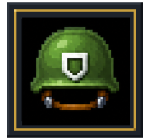
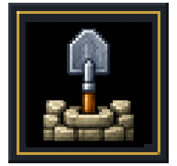
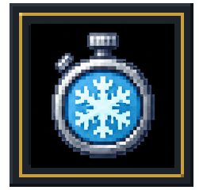
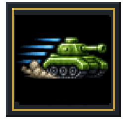
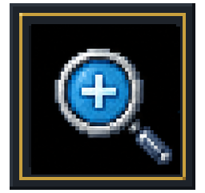
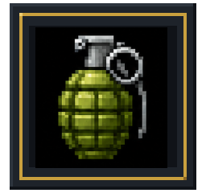
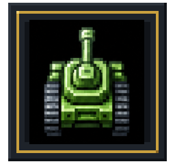

Token Shop
Use BATC for fuel, powerups, and packs in the live game economy.
BATTLE CITIES
WHITEPAPER v0.4 // AUGUST 2026
A game-first overview of BATTLE CITIES: competitive tank combat, in-game utility, rewards, token distribution, and the commitments that keep the economy transparent.
FIELD GUIDE
01 // GAME & PLAYER LOOP
Players enter matches, pilot tanks, master loadouts, and compete for leaderboard placement. $BATC is designed to support the game economy through the BATTLE CITIES shop, competitive events, and future community initiatives.
Fuel and powerups are gameplay utility, subject to balancing limits. They cannot guarantee a tournament result or bypass competitive integrity.
SEASONAL GAME POINTS
min(2,000, floor(match score / 10) + 100 × (level - 1) + 500 if match won)
Scores are server-derived. Match score is capped at 1,000,000 and level input at 99. Client-submitted Game Points are never trusted.
02 // BATC UTILITY
BATC has a fixed maximum supply of 50,000,000 tokens. Its planned role is to support fuel, eligible tank powerups, competitive incentives, liquidity, and ecosystem growth.
Use BATC for fuel, powerups, and packs in the live game economy.
Ranked modes can use caps, restrictions, mirrored loadouts, or separate queues.
Support competitive incentives without promising yield, value, or automatic rewards.
| Category | Items | BATC price |
|---|---|---|
| Fuel | Fuel x1 / x5 / x20 | 10 / 45 / 160 |
| Power | Shield / Base Defence / Freeze | 25 / 30 / 35 |
| Power | Speed / Star / Zoom Out | 35 / 50 / 30 |
| Power | Wipeout / Extra Life | 45 / 40 |
| Pack | Starter (+5 + kit) | 90 |
The current interface provides Token Shop, SOL Shop, and Loadout views. The Token Shop offers fuel, power items, and packs; live prices and inventory can change with the game economy.
Pricing, availability, cooldowns, inventories, and effects may change to protect balance and competitive integrity.
POWERUPS & BATC FLOW
Dropped powerups remain on the battlefield for 30 seconds. They provide tactical options, never guaranteed wins.

Player invulnerability.
10 seconds
Base frame becomes steel and invulnerable.
17 seconds
Freezes active enemies.
10 seconds
Raises player movement speed to 1.45×.
10 secondsRaises tank tier, capped at Tier D.
Current run
Expands the gameplay camera.
10 seconds
Destroys active enemies with no kill-score credit.
Instant
Adds one life.
Instant03 // COMPETITIVE REWARDS
Each event publishes its window, eligible mode, scoring rule, prize pool, top-10 split, and claim process before it starts.
Monthly placement uses the applicable seasonal leaderboard and may include anti-abuse checks and final-score verification.
Cheating, automation, collusion, exploit abuse, account farming, and inaccurate data can lead to a reward being held, rejected, reversed, or reallocated.
SOL and BATC rewards are promotional game rewards, not yield, interest, or a guarantee of value. Reward values, schedules, and eligibility can change.
A fixed total supply of 50,000,000 $BATC, allocated transparently to support long-term growth with no hidden inflation.
PRIVATE PRESALE ACCESS. Join the private presale before the public sale begins - public-sale pricing will be higher. Review the token details and risks before participating.
What’s live, what’s next, and how BATTLE CITIES is expanding through 2026.
The BATTLE CITIES website goes live with project details, updates, and early access information.
The browser game launches, opening the first playable BATTLE CITIES experience.
BATTLE CITIES arrives on Solana Seeker for the Solana mobile community.
Wallet flows, allocation tooling, and settlement are validated ahead of the public presale.
Stage 1 is live. Secure your BATC allocation before the next pricing stage opens.
Liquidity goes live and BATC becomes available for public trading on a decentralized exchange.
BATTLE CITIES expands to Play Solana and Google Play, bringing the game to more players.
Community rewards, partnerships, and new BATC utility begin rolling out across the ecosystem.
Roadmap dates are targets and may change based on development, security, platform approval, market, or regulatory considerations.
06 // RISKS & DISCLOSURES
$BATC is intended as a game utility token. It is not equity, debt, a deposit, a financial product, or a promise of profit. Digital assets are volatile and may lose all value.
Participation may not be available in every jurisdiction. Players remain responsible for tax, legal, wallet-security, and eligibility decisions.
Open whitepaper v0.4